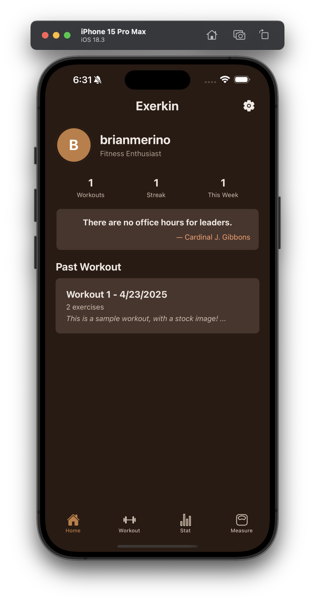
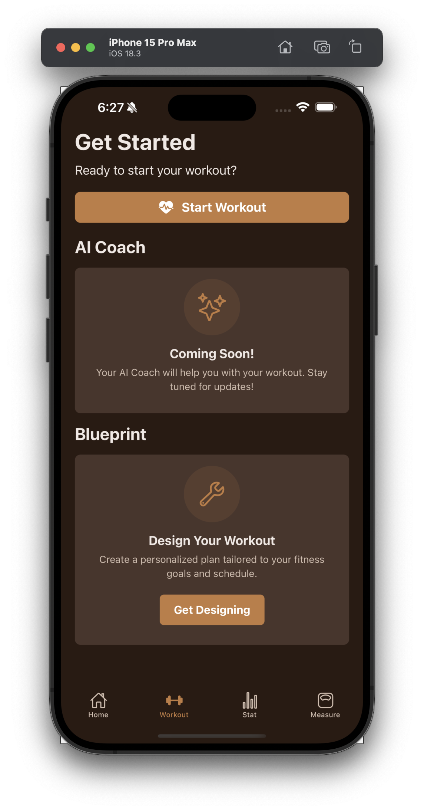
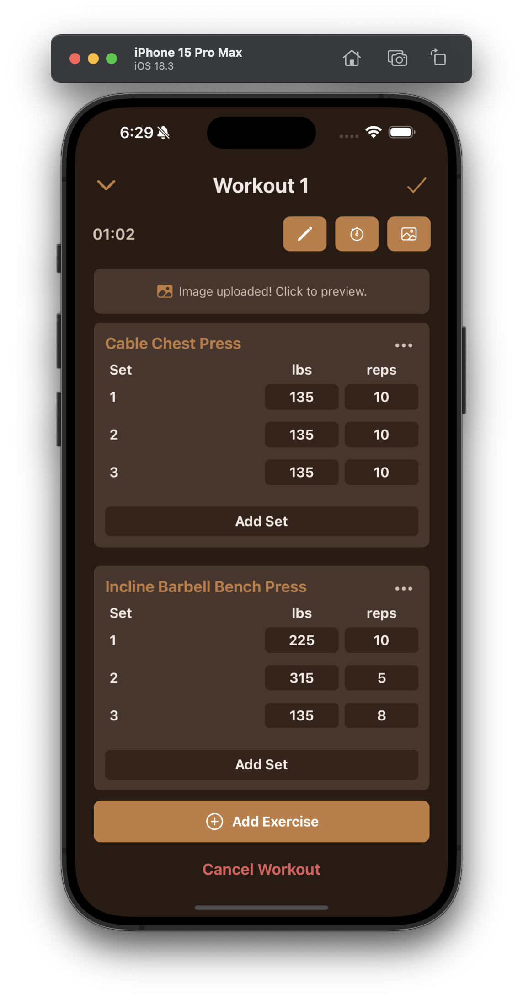
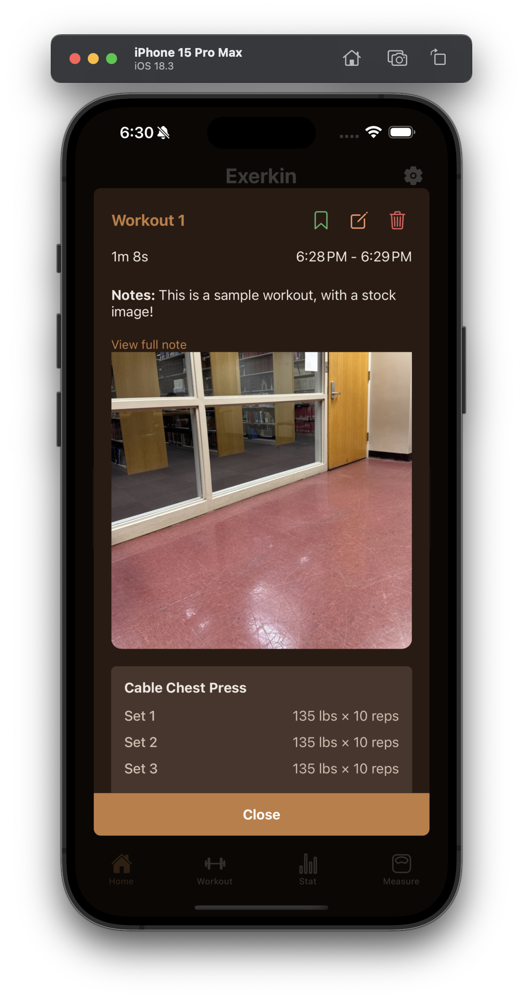

Computer Science Graduate · University of Tennessee, Knoxville
I'm focused on building things that make everyday life a little better. I created Exerkin, a social fitness tracker that helps people stay accountable through shared workouts and progress. My interests span both ends of the stack; from low-level C++ systems programming to polished mobile app development. I'm currently building a personal finance app designed to make budgeting feel less overwhelming.
A cross-platform mobile fitness tracking application built with React Native that enables users to log workouts, track exercise progress, and share activity with friends. The app supports structured workout logging with exercises, sets, and repetitions, and maintains historical workout data for progress tracking. Social features, including friend connections and shared workout feeds, are currently being developed.




A maze-style RPG built using the Unity game engine where players navigate environments while avoiding AI-controlled enemies. Enemy characters use the A* pathfinding algorithm to dynamically chase the player while navigating around obstacles. Implemented player movement, sprite animations, and core gameplay mechanics within Unity while collaborating with a team to design and develop the game systems.
A machine learning project exploring predictive modeling for NFL Super Bowl outcomes using historical team performance data from 1999–2019. Implemented multiple classification models using Scikit-learn and performed data preprocessing and feature analysis using Pandas. Compared model performance and visualized results with Matplotlib, evaluating the strengths and limitations of different prediction approaches.
Developed a web application during an internship at Oak Ridge National Laboratory for querying and analyzing malware samples stored in a MongoDB database. Implemented backend query functionality using Django to retrieve metadata for selected malware samples and display results through a web interface. The system enabled researchers to efficiently search and examine information across large malware datasets.